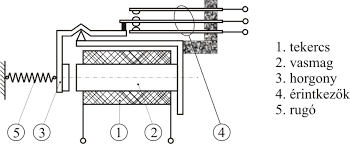
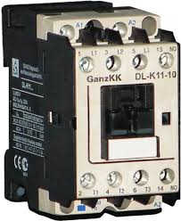
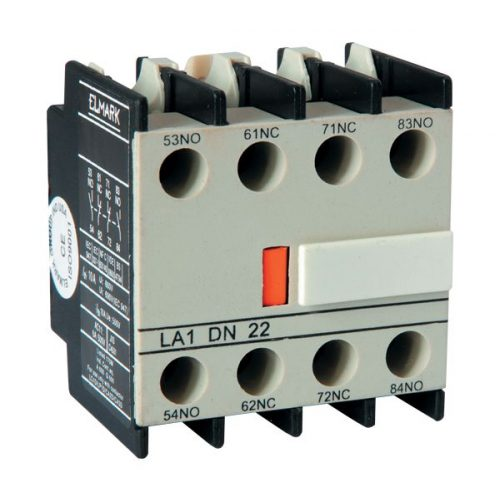
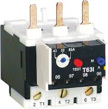

Ismertesse a mágnes kapcsolók, kontaktorok alkalmazási
területeit, főbb szerkezeti elemeit.
Soroljon fel olyan kiegészítő elemeket, amelyekkel a mágneskapcsolók feladatai bővíthetők.
Mutassa be a mikrokapcsolók működésének jellegét, az alkalmazás céljait, működési
jellemzőit.
Mutassa be a relék működési jellemzőit, alkalmazási területeit, ismertesse egy-egy
típusukat.
Azonosítsa az áramkör kialakításához szükséges eszközöket, elemeket egy háromfázisú
aszinkronmotor irányváltó kapcsolásában. Mutasson rá a szükséges reteszelés és az öntartás
megoldására.
A tételhez használható segédeszköz: - háromfázisú aszinkronmotor irányváltó
kapcsolásának fő- és vezérlő áramköri rajza
Mágneskapcsoló felépítése:
tekercs
vastest
érintkezők


Az egész relében a legfontosabb a tekercs. Ez a tekercs egy vastestre van
felcsévélve. Felépítése és működése nagyon hasonló a
transzformátoréhoz. Ha erre a tekercsre feszültséget kapcsolunk, akkor a mozgó töltések hatására
a tekercs körül mágneses mező keletkezik, ami behúzatja az érintkezőket. A tekercs két
végpontját A1-el és A2-vel szokták jelölni, az érintkezőket pedig alapállapotuk szerint vagy
NO (normal open - alapesetben nyitott érintkezők) vagy NC (normal close - alapesetben zárt
érintkezők), magát a kapcsolónyelvet, tehát amit a mágneses mező mozgat, az a COM (közös pont).
Ma a legtöbb relében mind a két érintkezőt beleépítik, tehát van egy NC és egy NO állapota, és
ezekből kettő van. Ezt úgy kell elképzelni, hogy van az NC kontaktus ugye, azért NC, mert a COM
alapesetben ezt a kört zárja. Feszültségre kapcsoláskor pedig ez a kör bontódik és a COM az NO
érintkezőhöz ugrik, így az NC-ből NO lesz és az NO-ból pedig NC. Reléket gyengeáramú
elektronikában használunk, mágneskapcsolókat pedig erősáramú erőátviteli rendszerekben. Tehát a
reléből max (speciális reléket nem nézve) 24V-os a maximum, mágneskapcsolóból pedig 230V-tól
egészen 380V-os kivitelig válogathatunk magunknak. Ez az egyik különbség. Relé esetében az
érintkezőpogácsák
egymástól néhány mm-re vannak, illetve egyik hátrányuk, hogy ki- ill. bekapcsoláskor a pogácsák
szikráznak, ezek egy statikusan és elektromosan is érzékeny processzoros rendszernél nagy
odafigyelést igényelnek, szikrázáskor anyagvándorlás is keletkezik, amitől egy idő után
összehegedhetnek az érintkezők. Valamint a tekercs tulajdonságából adódóan kikapcsoláskor nagy
feszültség indukálódik, ami az áram irányával ellentétes, ezt egy párhazusamosan, az áram
irányával ellentétesen kötött diódával tudjuk rövidre záratni. A mágneskapcsoló esetében az
érintkezők jóval távolabb helyezkednek el, nagyobb a légrés, nagyobb feszültség nagyobb mágneses
teret hoz létre, így a vonzás is erőteljesebb, ez produkálja a jellegzetes kattanó hangokat
ki/be kapcsoláskor. A mágneskapcsoló összetettebb és drágább eszköz, sokkal alkalmasabb induktív
terhelések kapcsolására, pl.: egy villanymotor. Közös tulajdonságuk, hogy mind AC, mind DC
körben használhatóak.
Kiegészítő elemek
A homlokfelületre pattintható:
kettő- vagy négyérintkezős segédérintkező-egység
behúzás- vagy elengedéskésleltetésű pneumatikus időzítő egység
elektromechanikus reteszelő (öntartó) egység
csillag-háromszög átkapcsolást időzítő egység
A felső oldalon a tekercskivezetésekre csatlakoztathaható:
interface (csatoló) egység
kis jelszint kapcsolására alkalmas egység
meghúzáskésleltetésű időrelé
túlfeszültségvédő vagy zavarszűrő egység
Az oldalfelületekhez illeszthető:
kétérintkezős segédérintkező-egység
két mágneskapcsoló egyidejű működését egymáshoz mechanikusan reteszelő elem
Az alsó csatlakozókapcsokra dugaszolható:
hőrelé
Felszerelés:
35 mm-es EN 50022 szabvány szerinti sínre pattinthaható, vagy
2 db M4 csavarral sík lapra rögzíthető,
szerelőbarát kapocselrendezés, elveszíthetetlen vezetékszorítók, gyors beköthetőség
A rápattintott vagy oldalra illesztett
segédérintkezők jelében az
első
számjegy (a sorozatszám) a poziciót jelenti, több érintkező esetén balról jobbra
haladva
növekvő
számokkal. A második helyen álló számjegy (a funkciószám) jelentése: az .1; .2
nyitó, a
.3; .4
záró, az .5; .6 záráskor késleltetve nyitó, a .7; .8 záráskor előresietve záró
érintkező. A
tekercskivezetések jele A1 és A2.

A hőrelé 95, 96 jelű nyitó érintkezője kapcsolja ki a mágneskapcsoló tekercsét, a
97, 98 jelű
záró érintkezője jelzési célra felhasználható.

Túlfeszültségvédelmi és zavarszűrő egységek: A
túlfeszültségvédelmi, illetve zavarszűrő feladatot ellátó egységek a kontaktortekercs felső A1
és A2 jelű csatlakozókapcsaira dugaszolhatók. Csatlakozóik olyan kialakításúak, hogy a vezérlő
feszültség vezetékének bekötését nem akadályozzák.
Alkalmazási kategóriák (az MSZ EN 60947-1 : 1998
alapján):
Alkalmazási
kategóriák (az MSZ EN 60947-1 : 1998 alapján):
AC-1
Nem induktív vagy csekély mértékben induktív terhelések,
ellenállásfűtésű kemencék.
Szerkezeti felépítésük és működtetésük szerint a kisfeszültségű mechanikus
kapcsolók csoportjai: nyomócsapos, forgó-, billenőkapcsolók és kontaktorok. Az első három
csoport kapcsolói általában kézi vagy idegen gépi működtetésűek, a kontaktor azonban saját
(általában) elektromágneses működtetésű. A mechanikus kapcsolók három fő szerkezeti elemből
állnak:
kapcsoló szerkezet (fő- és segédérintkezők, valamint ívoltó szerkezetek)
működtető szerkezet
Helyzet- (vagy állás-) biztosító szerkezet. Kontaktoroknál az utóbbi szerkezet feladatát a
működtető mágnes látja el.
Az érintkezők gyors szétválását forgó kapcsolóknál csak bonyolult mechanikai
szerkezettel (helyzetbiztosító vagy rugóerőtároló szerkezettel) lehetett megvalósítani. A
billenőkapcsolók esetében erre nincs szükség, mert érintkezőik gyors nyitása működésük
természetes következménye. Ezen kapcsolók előnye az egyszerű felépítésük is, de hátrányuk hogy
névleges áramuk legfeljebb csak 10 A lehet. Szerkezeti felépítésük és működésük szerint
billenőpályás és billenőkaros kapcsolók különböztethetők meg.
Mikrokapcsolók: A mikrokapcsolók alkotják a
billenőkaros kapcsolók másik csoportját. Ezek úgy vannak kialakítva, hogy külső erő hatására
átbillennek, majd annak megszűnésekor alaphelyzetükbe térnek vissza. A három ágú szigonyrugó két
meghajlított szélső ága
feszítő erőt gyakorol a belső szabad ágra. A mikrokapcsoló működtetésekor a szabad ágra egy
nyomócsap közvetítésével kell erőt kifejteni. A megfeszített ágak támadáspontja alá vagy fölé
került szabad ág határozza meg ugyanis a szigonyrugó végén lévő mozgó érintkezők helyzetét. A
kis méretek és az ék-csapágyazás következtében csekély (néhány tized mm) elmozdulással is
létrehozható az
átkapcsolás. Figyelembe véve a
mikrokapcsolók 1...5 ms kapcsolási és 1...2 ms pattogási idejét, a hibás kapcsolások biztos
elkerülése érdekében, másodpercenként legfeljebb 50 kapcsolás engedhető meg.
Végálláskapcsolók: A végálláskapcsolók a
helyzetkapcsolók közé tartoznak. Ha ez a helyzet a mozgás végpontja, akkor végállás kapcsolónak
nevezzük.
Relék: A védelmek és automatikák a villamos
energiatermelés, elosztás és felhasználás biztonsági berendezései. Ezek elemei a relék és
kioldók, amelyeket különálló készülékként, valamint egy másik kapcsolókészülék (pl. megszakító)
cserélhető szerkezeti egységeként vagy annak beépített elemeként, továbbá kiegészítő védelmi
készülékként (pl. kontaktoroknál) alkalmaznak. A relék és kioldók feladata, hogy meghatározott
jellemzőket ellenőrizve, azok megváltozása által érzékeljék a villamos berendezések üzemében
bekövetkezett rendellenességet, és - az érzékelt jellemző(k) megváltozásának mértékétől függően
- parancsadó szervükön keresztül - emberi beavatkozástól függetlenül, tehát automatikusan -
jelzést adjanak vagy beavatkozzanak a villamos berendezés működésébe. Érzékelő képességük azt
jelenti, hogy bemenetükön folyamatosan változó (legtöbbször villamos) jelet ellenőrizve, egy
meghatározott (beállítási) érték elérése esetén működésbe lépnek (megszólalnak). Általuk tehát
nem állapítható meg az ellenőrzött mennyiség mindenkori értéke, csupán az, hogy a beállítási
értékhez képest az kisebb, vagy nagyobb-e. Vezérlési képességük a megszólalásukkal együtt
járó kimeneti funkció, amely pillanatszerű változást eredményez. A relé és kioldó ezen funkció
szerint különböztethető meg. A relé megszólalásakor érintkezőt működtetve közvetetten vezérel
(villamos kimenete van), a kioldó pedig közvetlenül erőhatást gyakorol (mechanikai kimenete
van). A relék és kioldók akkor szólalnak meg, ha az általuk érzékelt mennyiség (áram,
feszültség, hőmérséklet stb.) egy adott értéket elér. Mindkét készülékfajta tehát adott esetben
pl. villamos bemenettel rendelkezik, eltérés a kimeneti oldalon jelentkezik. A reléknek a
kimenete is villamos, mert érintkezőket zárnak vagy nyitnak, a kioldók viszont mechanikus
kimenetükkel zárszerkezeteket működtetnek. Az ellenőrzött jel érzékelése lehet közvetlen vagy
közvetett (villamos jel esetén pl. mérőváltón keresztül). Eszerint primer és szekunder reléket
és kioldókat különböztethetünk meg. Ezek a hálózatban folyó vagy azzal arányos áram beállított
értéke esetén szólalnak meg és kioldók esetében a megszakító érintkezőit közvetlenül, relék
esetében pedig közvetve (egy kioldó által) nyitják. Indító és mérőreléként egyaránt használják
az
áram-, feszültség-, teljesítmény-, impedancia- és frekvenciareléket. A pontossági
osztályuknak megfelelő hibahatárt általában 1, 2, 5 és 10 % értékben adják meg.
A relék két típusa az időrelék és a szilárdtest relék. A szilárdtestrelék
semmiféle mozgó
elemet nem tartalmaznak: félvezetős technológiával működnek, ezért gyorsabbak, nem
prelleznek, hosszabb élettartamúak, de az impulzus jellegű túlterhelést nem bírják. Az üzemi
hőmérsékletükre figyelni kell. A multifunkciós időrelék kismegszakító méretűek, univerzális
tápfeszültség tartományai 24-
230V AC és 24-48V DC, egy váltóérintkezős, relés kimenettel, valamint LED-es
működésvisszajelzővel rendelkeznek, több féle időzítési funkcióra alkalmasak, pl. a Finder 80-as
sorozat: AI: Meghúzás késleltetés, DI: Bekapcsolást törlő (vagyis ejtés
késleltetés), SW: Villogó relé, szimmetrikus, impulzusindítással,
BE: Ejtés késleltetés vezérlőkontaktussal,
CE: Meghúzás és ejtés késleltetés vezérlőkontaktussal,
DE: Bekapcsolást törlő relé vezérlőkontaktussal.